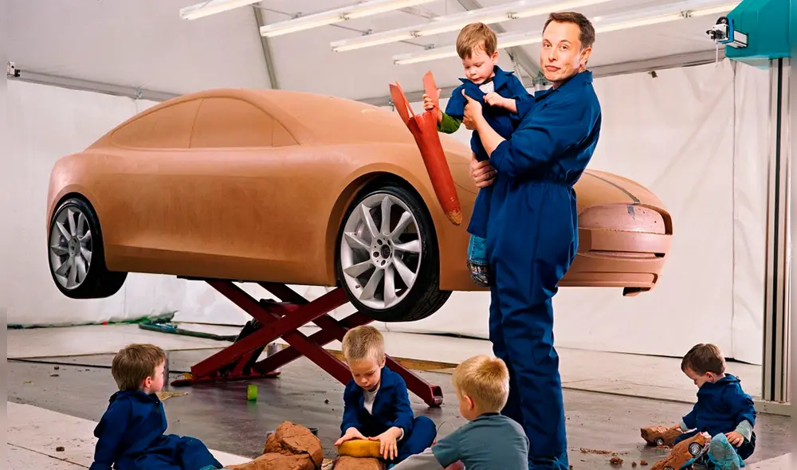
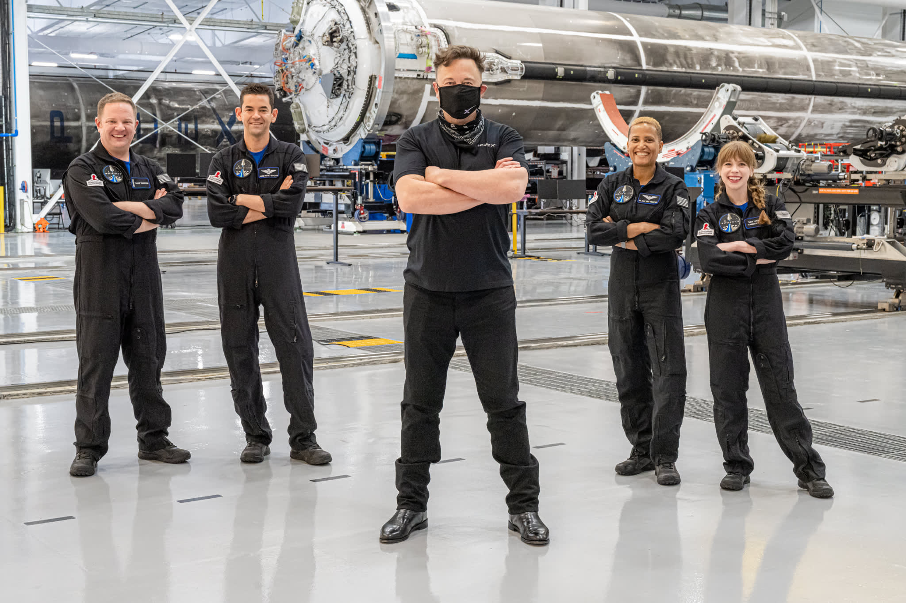
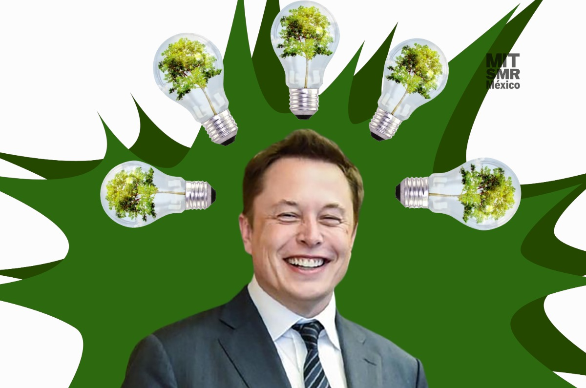

FUNDACIÓN DE LA ASTRA NOVA SCHOOL - 2014 Desde 2014, Elon Musk emprendió un experimento educativo con la fundación de Ad Astra, una escuela privada pensada inicialmente para sus hijos y empleados de su empresa espacial.El objetivo era ofrecer una formación diferente, centrada en pensamiento crítico, ciencia, tecnología, matemáticas e innovación alejándose del modelo tradicional.Este proyecto refleja una apuesta por preparar a nuevas generaciones con habilidades STEM, pensamiento crítico e innovación, en un contexto de transformación tecnológica global. Por su enfoque, muchos lo consideran un intento por construir “una nueva forma de enseñar”, adaptada a los tiempos modernos. 
 DONACIÓN A ST. JUDE CHILDREN'S RESEARCH HOSPITAL - 2021 En septiembre de 2021, tras el exitoso regreso de la misión espacial Inspiration4, la primera tripulación compuesta íntegramente por civiles, Elon Musk anunció una donación de 50 millones de dólares destinada a apoyar la causa benéfica de la misión: financiar la investigación y tratamiento del cáncer infantil en el hospital St. Jude.La contribución de Musk fue celebrada públicamente por miembros de la tripulación y por el hospital, resaltando el poder de la filantropía cuando se combina con innovación. Con esta acción, Musk canalizó recursos significativos hacia un problema global, el cáncer infantil.
CREACIÓN DEL PREMIO XPRIZE - 2021 En febrero de 2021, Elon Musk, a través de su fundación, lanzó el XPRIZE Carbon Removal, un concurso global dotado con 100 millones de dólares con el objetivo de incentivar a científicos de todo el mundo a desarrollar tecnologías capaces de extraer dióxido de carbono directamente de la atmósfera o los océanos y almacenarlo de forma permanente, con la ambición de combatir el cambio climático a escala planetaria.Con esta iniciativa, Musk buscó movilizar al talento global hacia soluciones reales y escalables contra la crisis climática, reconociendo que la neutralidad no basta: se necesita extraer carbono ya emitido. El XPRIZE representa una apuesta ambiciosa por la innovación tecnológica con impacto medioambiental, impulsando la investigación y desarrollo de métodos disruptivos para enfrentar uno de los mayores desafíos de nuestro tiempo. 